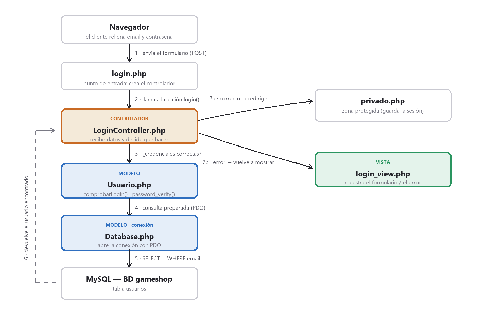

Login de clientes con MVC
Este apartado reúne en un único ejemplo práctico todo lo visto en la unidad
(formularios POST, validación en servidor, htmlspecialchars(), tokens CSRF y sesiones)
y lo organiza con un patrón profesional conocido: Modelo-Vista-Controlador (MVC).
¿Qué es el patrón MVC y por qué usarlo?
Hasta ahora, en ejemplos como miform.php, mezclábamos en un mismo archivo el HTML,
la validación y el acceso a datos. Funciona, pero cuando el proyecto crece se vuelve
difícil de mantener. MVC separa el código en tres responsabilidades:
- Modelo — habla con la base de datos. Aquí van las consultas SQL. No contiene HTML.
- Vista — solo muestra HTML al usuario. No hace consultas ni lógica.
- Controlador — coordina: recibe la petición, pregunta al Modelo y elige qué Vista mostrar.
💡 Enlace con la UD5: cuando trabajemos con Laravel, todo el framework está construido sobre MVC. Aprenderlo ahora "a mano" hace que después el framework tenga mucho más sentido.
La base de datos
Trabajamos con una base de datos MySQL llamada gameshop (instalada con XAMPP) que
tiene una tabla usuarios:
| Campo | Tipo | Notas |
|---|---|---|
id |
INT, auto_increment | Clave primaria |
nombre |
VARCHAR(60) | |
email |
VARCHAR(120), UNIQUE | Sirve como identificador de acceso |
password |
VARCHAR(255) | Cifrada con password_hash(), nunca en texto plano |
rol |
ENUM('cliente','admin') | Para distinguir permisos |
creado_en |
DATETIME | Fecha de alta |
❌ Nunca guardes contraseñas en texto plano. Se almacenan cifradas con
password_hash($clave, PASSWORD_DEFAULT)y se comprueban conpassword_verify(). Así, aunque alguien robe la base de datos, no puede leer las contraseñas.
Estructura de archivos del proyecto
Cada carpeta corresponde a una pieza del patrón:
mvc/
├── index.php # página de inicio, con enlace al login
├── login.php # punto de entrada: arranca el controlador
├── logout.php # cierra la sesión
├── privado.php # página protegida (solo con sesión iniciada)
├── config/
│ └── config.php # datos de conexión y del sitio
├── models/
│ ├── Database.php # MODELO · conexión PDO a MySQL
│ └── Usuario.php # MODELO · consultas de la tabla usuarios
├── controllers/
│ └── LoginController.php # CONTROLADOR · recibe y decide
└── views/
└── login_view.php # VISTA · el formulario en HTML
El flujo de un login, paso a paso
El siguiente diagrama muestra cómo se pasan el trabajo los archivos. El Controlador es el único que "habla" con todos; el Modelo aísla la base de datos y la Vista solo pinta:

El código, archivo por archivo
config/config.php — la configuración en un solo sitio
<?php
// Datos de conexión a MySQL (XAMPP). Si cambian, solo tocamos aquí.
define('DB_HOST', 'localhost');
define('DB_NAME', 'gameshop');
define('DB_USER', 'root'); // usuario por defecto de XAMPP
define('DB_PASS', ''); // sin contraseña (SOLO en pruebas locales)
define('DB_CHARSET', 'utf8mb4');
define('BASE_URL', 'http://localhost/curso2627/mvc');
❌
rootsin contraseña vale para practicar en local, pero jamás en un servidor real. En producción se crea un usuario propio con permisos mínimos y una contraseña fuerte.
models/Database.php — la conexión (MODELO)
Usamos PDO con consultas preparadas: es el método recomendado y el que nos protege de la inyección SQL.
<?php
class Database
{
public static function conectar()
{
$dsn = 'mysql:host=' . DB_HOST . ';dbname=' . DB_NAME . ';charset=' . DB_CHARSET;
$opciones = [
PDO::ATTR_ERRMODE => PDO::ERRMODE_EXCEPTION, // errores como excepción
PDO::ATTR_DEFAULT_FETCH_MODE => PDO::FETCH_ASSOC, // resultados como array asociativo
PDO::ATTR_EMULATE_PREPARES => false, // preparadas reales (más seguro)
];
try {
return new PDO($dsn, DB_USER, DB_PASS, $opciones);
} catch (PDOException $e) {
die('Error de conexión: ' . $e->getMessage());
}
}
}
models/Usuario.php — las consultas de usuarios (MODELO)
Aquí está la lógica de datos. Fíjate en :email: es un hueco que rellenamos con
execute(). Nunca metemos el texto del usuario directamente dentro del SQL.
<?php
require_once __DIR__ . '/Database.php';
class Usuario
{
// Busca un usuario por su email (consulta PREPARADA -> sin inyección SQL)
public static function buscarPorEmail($email)
{
$pdo = Database::conectar();
$sql = 'SELECT id, nombre, email, password, rol
FROM usuarios WHERE email = :email LIMIT 1';
$consulta = $pdo->prepare($sql);
$consulta->execute([':email' => $email]);
return $consulta->fetch(); // devuelve la fila, o false si no existe
}
// Comprueba email + contraseña. Devuelve el usuario, o false.
public static function comprobarLogin($email, $password)
{
$usuario = self::buscarPorEmail($email);
if ($usuario === false) {
return false; // ese email no existe
}
// La contraseña de la BD está cifrada: password_verify compara el
// texto plano con el hash. NUNCA se comparan con == directamente.
if (password_verify($password, $usuario['password'])) {
return $usuario;
}
return false; // la contraseña no coincide
}
}
controllers/LoginController.php — el cerebro (CONTROLADOR)
Recibe el POST, aplica toda la seguridad vista en la unidad y decide. No escribe HTML ni hace SQL directamente.
<?php
require_once __DIR__ . '/../models/Usuario.php';
class LoginController
{
public function login()
{
if (session_status() === PHP_SESSION_NONE) { session_start(); }
// Token CSRF (igual que en el tema de formularios): secreto y aleatorio
if (empty($_SESSION['csrf_token'])) {
$_SESSION['csrf_token'] = bin2hex(random_bytes(32));
}
$error = ''; $email = '';
if ($_SERVER['REQUEST_METHOD'] === 'POST') {
// 1) Verificamos el token CSRF con hash_equals (comparación segura)
if (!hash_equals($_SESSION['csrf_token'], $_POST['csrf_token'] ?? '')) {
$error = 'Petición no válida. Recarga la página.';
} else {
$email = trim($_POST['email'] ?? '');
$password = $_POST['password'] ?? '';
if ($email === '' || $password === '') { // 2) validación
$error = 'Debes rellenar el email y la contraseña.';
} else {
$usuario = Usuario::comprobarLogin($email, $password); // 3) al MODELO
if ($usuario === false) {
$error = 'Email o contraseña incorrectos.'; // mensaje genérico
} else {
// 4) LOGIN OK -> regeneramos el ID (anti Session Fixation)
session_regenerate_id(true);
$_SESSION['usuario'] = [
'id' => $usuario['id'],
'nombre' => $usuario['nombre'],
'email' => $usuario['email'],
'rol' => $usuario['rol'],
];
header('Location: privado.php'); // 5) a la zona privada
exit;
}
}
}
}
// Mostramos la VISTA pasándole las variables que necesita
$csrf_token = $_SESSION['csrf_token'];
require __DIR__ . '/../views/login_view.php';
}
public function logout()
{
if (session_status() === PHP_SESSION_NONE) { session_start(); }
$_SESSION = [];
session_destroy();
header('Location: index.php');
exit;
}
}
login.php — el punto de entrada
Muy cortito a propósito: su único trabajo es arrancar el controlador. Así toda la lógica queda repartida en su sitio.
<?php
require_once __DIR__ . '/config/config.php';
require_once __DIR__ . '/controllers/LoginController.php';
$controlador = new LoginController();
$controlador->login();
views/login_view.php — la pantalla (VISTA)
Solo HTML. Recibe $error, $email y $csrf_token. Antes de imprimir cualquier dato
usamos htmlspecialchars() (protección XSS, igual que ya vimos).
<?php if ($error !== ''): ?>
<div class="alert alert-danger"><?= htmlspecialchars($error) ?></div>
<?php endif; ?>
<form method="POST" action="login.php" novalidate>
<!-- Campo oculto con el token CSRF -->
<input type="hidden" name="csrf_token" value="<?= htmlspecialchars($csrf_token) ?>" />
<input type="email" name="email" value="<?= htmlspecialchars($email) ?>" required>
<input type="password" name="password" required>
<button type="submit">Entrar</button>
</form>
privado.php — el "guardián" de la zona protegida
Antes de mostrar nada, comprueba la sesión. Si no hay usuario, redirige al login.
<?php
session_start();
// Si NO hay usuario en la sesión -> fuera, al login
if (!isset($_SESSION['usuario'])) {
header('Location: login.php');
exit;
}
$usuario = $_SESSION['usuario']; // aquí ya es seguro usarlo
Toda la seguridad de la unidad, aplicada aquí
Este ejemplo no introduce ideas nuevas de seguridad: reutiliza las que ya estudiamos, cada una en su sitio dentro del MVC.
| Técnica de la unidad | Dónde se aplica en el login |
|---|---|
Validación en el servidor (isset / empty) |
Controlador: comprueba email y contraseña antes de consultar |
htmlspecialchars() (anti-XSS) |
Vista: al imprimir el error y el email |
| Token CSRF en sesión | Controlador lo genera y verifica; Vista lo envía oculto |
session_regenerate_id(true) (anti Session Fixation) |
Controlador: justo tras validar las credenciales |
| Consultas preparadas (anti inyección SQL) | Modelo: prepare() + execute() con :email |
| Contraseñas cifradas | Modelo: password_verify() contra el hash de la BD |
✅ Mejoras respecto a un login básico: el CSRF y la regeneración del ID de sesión no son imprescindibles para "que funcione", pero sí para que sea seguro. Por eso los incorporamos: un buen login los lleva siempre.
Cómo probarlo
- Arranca Apache y MySQL desde el panel de XAMPP.
- Abre
http://localhost/curso2627/mvc/. - Usuario de prueba:
alumno@gameshop.com/ contraseña1234.
💡 Para ampliar (siguiente paso): crear un
registro.phpque dé de alta clientes nuevos. Reutilizaría el mismo patrón: una Vista con el formulario, un métodoregistrar()en el Controlador y unUsuario::crear()en el Modelo que guarde la contraseña conpassword_hash().